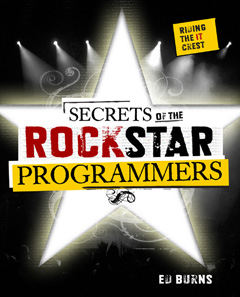

http://purl.oclc.org/NET/RidingTheCrest
Finding plugin...Use this to control the rockin' background music.
With the rise of blogging, many of the world's most talented programmers have become celebrities in the field of IT. These "rock star programmers" are bellwether icons for their legions of readers: IT professionals trying to stay current. This book is a collection of incisive interviews with A-list programmers centering on the themes of "spotting trends", "staying current", and "how to avoid becoming obsolete".
Moving beyond the realm of technology specific programming books, this book will not be stale by the time it hits bookshelves, nor will it be stale when the current rage of software development methodology changes to "the next big thing". This book is all about how to spot the next big thing and leverage it to the reader's advantage. But don't take the author's word for it, take the word of the experts who have proven success at staying current and riding the crest of software development trends as they emerge.
The McGraw Hill catalog page for the book is available here.
The McGraw Hill press release for the book is available here.
This book is already listed with ISBN 0071490833 on amazon.com.
| Name | Link | Rock-star Cred | Interviews Conducted On | Chapter Status | |
|---|---|---|---|---|---|
|
Software Technology Experts
|
Rod Johnson | Biography | Creator of Spring Framework, the guy who brought Inversion of Control into the mainstream |
20070607, 20070926 | proof_from_author |
| Adrian Colyer | Blog | Renowned Aspect Oriented Programming Expert | 20070301, 20070323 | proof_from_author | |
| Chris Wilson | Blog | Co-author of NCSA Mosaic for Windows and Chief Architect for Microsoft Internet Explorer | 20071010 | proof_from_author | |
| Nikhil Kothari | Nikhil's Blog | Lead Architect of Microsoft ASP.Net | 20071020 | proof_from_author | |
| Hani Suleiman | Blog | Consultant, Famous Blogger | 20070222, 20070322 | proof_from_author | |
| James Gosling | Blog | Father of Java | 20071016 | proof_from_author | |
| Kohsuke Kawaguchi | Homepage | Extremely Prolific Hacker, Creator of Hudson, the best free continuous integration engine. | 20071003 | proof_from_author | |
| The Java Posse | Homepage | The most popular Java Podcast | 20070508 | proof_from_author | |
|
Software Pedegogy Experts
|
Herb Schildt | Biography | The world's best selling programming author | 20070916 | proof_from_author |
| Floyd Marinescu | Floyd's Current Project | Built TheServerSide.com into the predominant community of Enterprise Java Developers |
20070823, 20070907 | proof_from_author | |
|
Software Development Experts
|
Andy Hunt | Blog | Co-founder of the Pragmatic Programmers LLC. | 20070828, 20070831 | proof_from_author |
| Dave Thomas | Wikipedia Entry | Object Oriented Software Pioneer | 20071010 | proof_from_author | |
| Max Levchin and Libor Michalek | Max's Wikipedia Entry | Max: Co-founder and former CTO of PayPal. Libor: Co-founder of slide.com | 20071024 | proof_from_author | |
|
Actual
Rock Stars |
Weird Al Yankovic | Home Page | The Programmer's Rock Star | 20070920 | proof_from_author |
|
Appendices
|
Front Matter | proof_from_author | Appendix A | Question Index | proof_from_author |
| Appendix B | Phillip G. Armour's The Five Orders of Ignorance | proof_from_author |
| Chapter Status | Meaning |
|---|---|
| Conducting interviews | |
| Interviews complete | |
| The raw audio has been transcribed | |
| The raw audio has been formed into chapter | |
| incorp_from_author | The first draft of the chapter has been delivered to the publisher |
| The publisher has copyedited the chapter | |
| copyedit_from_author | The author has reviewed and approved the copyedits |
| The publisher has presented the final draft to the author | |
| final_from_author | The author has reviewed and approved the final draft |
| The publisher has produced page proofs for the chapter | |
| proof_from_author | The author has reviewed and approved the page proofs |
| complete | The publisher has accepted the page proofs. |
Thank you so much for agreeing to participate in my little book project. I'm really excited about taking a snapshot of the state of things in software development at the present time. Let me share the approach I'm taking to this book so you can know into what you are getting.
As Alistair Cockburn (with a silent "ck" as in blackguard) says, at its best, the process of making software is a collaborative game. In my opinion, the emphasis is squarley on "collaborative". There is a huge amount of value in sharing experiences and "war stories" collected over years of playing the game. I would like to share your stories with a wide audience through the interviews in this book.
I'd like to conduct as many of the interviews as possible in person. I want the process of doing the interview to be really informal, ideally in a quiet space over some coffee or beer (depending on the preference). Of course, we most likely will have to resort to the phone, in which case I'll do my best to make it casual.
I expect it'll take about three to five hours, total, for the preparation, execution, and post-production of the interview. Once we schedule the interview, I'll send you a list of about 15 questions via email. You can answer these and others over email if you want, but really, these will be a starting point for our verbal conversation. We'll probably spend about an hour on the actual interview, which I will audio-record. I'll derive the actual interview text from the recording and I'll send it to you for your approval.
Exposure! This book is being published by McGraw-Hill and will be widely distributed. Advance word from the Border's buyer on the McGraw-Hill account indicates they are very excited about the idea. The book will be located in the "programming" section, not the "career development" section of the bookstore.